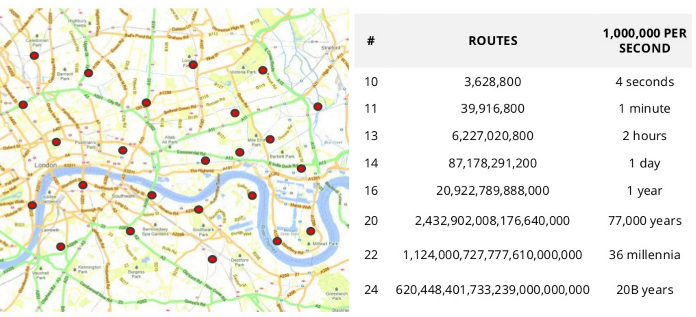

Travelling Salesman Problem (TSP)

Who's sharing experience
Gediminas Morkevičius aka @l3pp4rd

- I code with - GO, Java, C
- Less with PHP, javascript at the moment
- Hardcore - ViM, Arch Linux, DWM user
- Fan of suckless.org tools
- I share my stuff at github.com/l3pp4rd
At DATA-DOG

In partnership with Satalia

We solve hard problems
We are developing sofware for grocery supply chain
Which compared to Maxima in baltic states
is at least 5 times bigger
has around 200 depots in the region we work with
What are we doing there?
- Routing solution
- Scheduling
- Optimization
and these are hard problems
Vehicle routing problems
How many possible routes there may be within 24 points?

First of all, you have to lower the number of possibilities
and make trade offs
A similar solution to our - Oracle ORS uses a Super-PC with 400 CPUs
Imagine a schedule..

Lets make it harder
Every drop may be allocated to a time slot